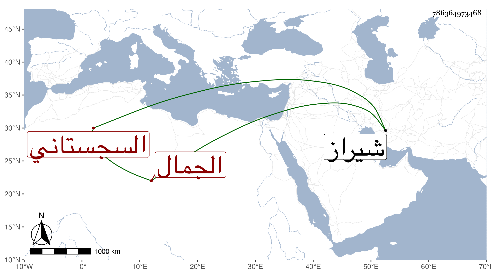

0902Sakhawi.DawLamic.ITO20230111-ara1.EIS1600.786364973468
Biography ID: 786364973468
993
يحيى بن علي بن داود بن سليمان الجمال الخفركي ثم السجستاني . أخذ عنه الطاووسي ووصفه بالإرشاد وأنه شيخ الصوفية ، قال وسمعت عليه آداب المريدين وقرأت عليه موضحة الأسرار ومرآة الناظرين في شرح منازل السائرين كلاهما من تصنيفه وكذلك أجوبة أسئلتي الأربعين المسماة طراز الدقائق في إبراز الحقائق وذلك في أيام اعتزاله بشيراز سنة سبع وعشرين وأجاز لي .
